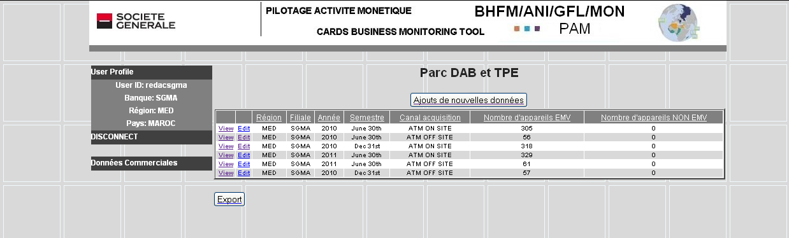

Table of contents Close window
Commercial data domain:
When you click on the name of information type name a table is displayed showing an abstract of data: only some fields of the table are presented at this level.
Records in the table can be sort by clicking on the text at the head of the column.
If there are more records/ lines than the screen capacity, buttons are available in order to navigate in the table. Click on Next Records or Previous Records.
ATM Acquiring Activity table example :
